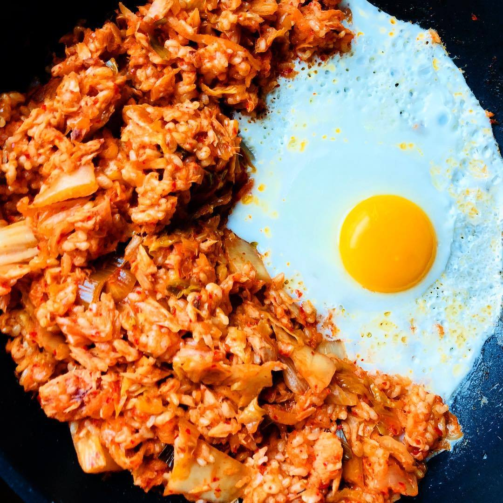

Recipe Detail
Recipe Detail
Kimichi

Required ingredients
List of ingredients
- 2 cups cooked white rice (preferably day-old rice)
- 1 cup kimchi, chopped
- 2 tablespoons kimchi juice
- 2 tablespoons vegetable oil or sesame oil
- 1/2 onion, diced
- 2 cloves garlic, minced
- 1/4 cup diced spam or cooked pork (optional)
- 2 green onions, sliced
- 1 tablespoon soy sauce
- 1 teaspoon sugar (optional)
- 1 tablespoon gochujang (Korean red pepper paste, optional)
- Fried egg (for topping)
- Sesame seeds (for garnish)
Other
-
- Difficulty level: difficult
- Required time: 30min
Steps
- Heat the oil in a large pan or wok over medium heat.
- Add the diced onion and garlic, and sauté until they become translucent.
- If using spam or pork, add it now and fry until lightly browned.
- Add the chopped kimchi to the pan and fry for a couple of minutes until it's heated through.
- Stir in the kimchi juice, soy sauce, sugar, and gochujang (if using). Mix well.
- Add the cooked rice to the pan. Break up any clumps and stir well to ensure the rice is fully coated with the kimchi mixture.
- Fry the mixture for a few minutes until the rice becomes slightly crispy.
- Stir in the sliced green onions.
- Serve the kimchi fried rice in bowls. Top each serving with a fried egg and sprinkle with sesame seeds.